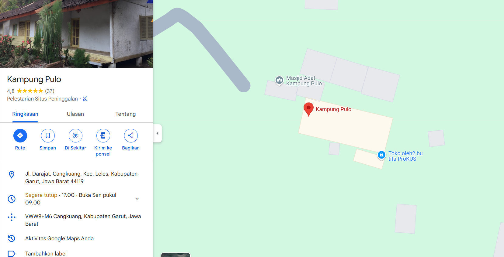

Sajarah
Kampung Adat Pulo mangrupa ngaran hiji kampung adat leutik di wewengkon Désa Cangkuang, Kacamatan Lélés, Garut. Kampung Pulo, numutkeun kapercayaan masarakatna, dimimitian ku hiji tokoh nu disebut Arif Muhammad (kuburanana aya gigireun Candi Cangkuang), nu nyebarkeun agama Islam di wewengkon éta.
Arif Muhammad, minantu Sultan Sumenep, Madura, téh tadina anggota perjurit Mataram jaman Sultan Agung nu milu ngarurug Batavia abad ka-17. Alatan seranganana gagal, perjurit Mataram téh kalabur ka mana baé, Nya kitu ogé Arif Muhammad, nu lajéng bubuara sarta ngajarkeun Islam di wewengkon Cangkuang.
Di Kampung Pulo ngan ukur genep imah adat anudiadegkeun silih selang, tilu imah masing-masing kénca jeung katuhu, ditambah masjid pikeun ibadah. Ayeuna, Kampung Pulo diwangun ku genep kulawarga anu jumlah pendudukna 23 jiwa, maksimal anu nyicingan henteu tiasa langkung ti 26 jiwa. Sistemwarisan nya
éta imah adat dibikeun ka putri cikal. Ku kituna, sistem kulawarga di KampungPulo kudu nuturkeun garis indung. Lamun aya budak lalaki nu geus kawin jeung umurnageus dua minggu, budakna kudu ninggalkeun Kampung Pulo.
Struktur Organisasi Kampung Adat Pulo
Stuktur Organisasi Kampung Adat Pulo ieu sabagéana gedé nurut kana sistem tradisional nu diturunkeun ti generasi ka generasi, nu ngagambarkeun tata kelola sosial jeung budaya masyarakat adat di tempat éta. Kampung Adat Pulo biasana miboga struktur organisasi saperti kieu:
- Ketua Adat (Kuncen)
Jadi Pamimpin utama dina adat istiadat jeung spiritual
- Kepala Kampung
Ngatur pamaréntahan désa jeung hubungan jeung pihak luar.
- Tokoh Masyarakat
Para pamuka anu boga peran husus, kayaning dina widang pendidikan, pertanian, atawa ékonomi.
- Warga Masyarakat
Unggal anggota masyarakat miboga peran dina ngajaga adat jeung tradisi.
Ngaran Imah
Sababaraha wangunan utama di Kampung Adat Pulo miboga nilai adat jeung budaya anu luhur. Aya aturan husus anu kudu dipatuhi ku imah-imah di kampung ieu supaya adat tetep lestari. Di handap ieu sababaraha ngaran imah atawa wangunan di Kampung Adat Pulo:
- Imah Gede (Imah Utama).
Ieu téh imah anu dihunian ku Kuncen (pamimpin adat). Fungsina minangka puseur kagiatan adat jeung tempat nyimpen benda pusaka.
- Bale Patemon.
Tempat ngumpul warga pikeun musyawarah adat, Dipaké ogé minangka tempat panyambutan tamu atawa acara ritual.
- Imah Warga.
Imah-imah séjénna boga bentuk anu sarua jeung teu meunang dirobah sacara sembaranan. Jumlah imah di Kampun Pulo diwatesan ngan tujuh imah, anu henteu meunang nambah atawa ngurangan nurutkeun adat nu berlaku. Imah-imah ieu wangunna imah panggung jeung bahan utamana kai jeung hatepna tina ijuk atawa rumbia.
- Masjid Kampung Pulo
Ngan hiji-hijina tempat ibadah pikeun masarakat Kampung Adat Pulo. Boga arsitektur khas anu ngagabungkeun unsur tradisional sunda jeungg unsur islam. Tempat dilaksanakeunana kagiatan kaagamaan sapertos pangajian jeung shalat berjamaah.
Kapamalian
- Teu meunang miara sato ingon nu sukuna opat. Arif Muhammad teu resep kana sato ingon nu beuki dangdaunan.
- teu meunang digawé dina poé rebo; poé ieu téh hususon Arif Muhammad ngajarkeun Islam, antukna masarakat teu digarawé.
- Teu meunang nabruh gong atawa gamelan, putrana anu pameget pupus dina kariaan sunatan anu nabeuh gamelan.
- Imah kudu maké hateup injuk sarta bentukna prisma.
- Teu meunang aya leuwih ti genep kulawarga (genep suhunan imah jeung hiji masjid), baheula Arif Muhammad gaduh putra istri genep, putra pamegetna pupus nalika anom kénéh.
Upacara Adat
Sababaraha upacara adat anu masih dilaksanakeun di Kampung Adat Pulo mangrupa bagian tina tradisi warisan karuhun. Upacara-upacara ieu raket patalina jeung kayakinan, adat istiadat, jeung prinsip Islam anu geus nyatu dina masarakat Kampung Adat Pulo. Di handap ieu sababaraha upacara adat anu masih dilaksanakeun:
- Upacara Daur Kahirupan Manusa
Upacara Perkawinan, Upacara Kandungan (tujuh bulanan), Upacara kalahiran orok (ngalahirkeun, marhabaan), upacara maot.
- Upacara Pertanian
Upacara anu patali sareng kagiatan tatanén.
- Upacara Ngadegkeun Imah
Upacara anu dilaksanakeun nalika ngadegkeun imah
- Upacara Mandian Barang Pusaka (Ngibakan Barang Pusaka)
Upacara ieu mangrupikeun salah sahiji tradisi anu pangpentingna di Kampung Adat Pulo.
Dilaksanakeun unggal tanggal 14 Maulud, ti mimiti jam 24.00 dugi ka jam 13.30 WIB.
Dihadiran ku genep kulawarga inti Kampung Pulo sareng kulawarga sanés anu parantos cicing di luar kampung.
upacara ieu ogé mangrupikeun wujud hormat sareng ngamumulé budaya.
Lokasi

Lokasi:
Kampung ieu ayana di Cangkuang Kabupaten Garut, Jawa Barat.